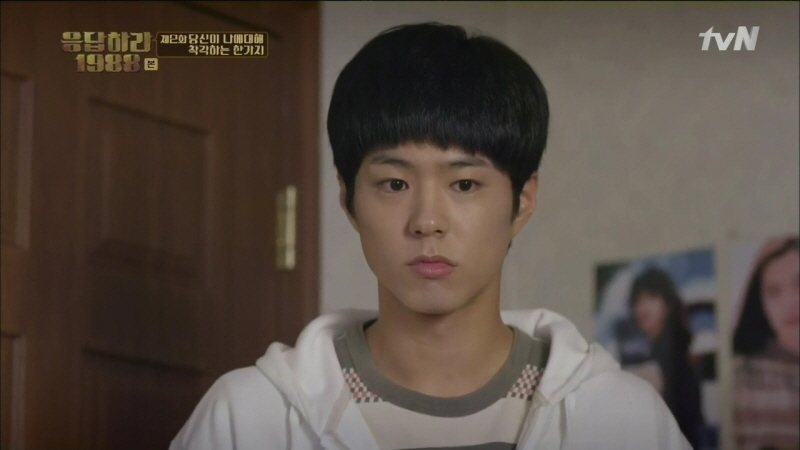

대표작은 tvN '응답하라 1988'이다.
역할 : 최택(천재바둑기사, 1971년생)
역할 설명 : 골목 금은방 ‘봉황당’집 외동아들. 바둑계의 돌부처로 불리는, 대한민국 국보급 바둑기사다. 11살에 프로에 입단, 13살에 세계최연소 타이틀 획득 이후, 88년 현재까지 바둑 랭킹 1위, 상금 1위의 자리를 지키며, 최고의 바둑천재로 불린다. 불과 15세의 나이에 스승을 꺾는 파란을 일으키며 바둑계의 신흥강자로 떠올랐다. 타고난 천재성과 무서운 집중력, 가혹하리만큼 자신을 채찍질하는 피나는 노력으로 국내는 물론, 중국, 일본의 고수들을 꺾으며 최고의 자리에 올랐다. 바둑의 신으로 불리는 택. 하지만 쌍문동에선, 신 보단... 등신에 가깝다. 목소리 듣기가 힘들 만큼 말수가 적고, 멍하니 넋 놓고 있느라, 혼자 뒷북치기 일쑤다. 라면도 못 끓여, 신발끈도 못 묶어... 할 줄 아는 거라곤 오직 바둑 뿐이니... 골목 이웃들에겐 언제나 돌봐주고 챙겨줘야 할 고길동 아저씨네 희동이로 불린다. 친구라고는 한 동네에서 같이 자라온, 정환, 선우, 동룡, 덕선. 네 사람 뿐이다. 대회 상금을 받아올 때마다, 한턱 쏘라고 조르고, 해외로 대국을 갈 땐 양주 한병 사오라며 항상 택을 귀찮게 한다. 그래도 언제나 형처럼, 누나처럼 택의 곁을 지키는 그들이 있어 외롭고 아픈 마음을 웃음과 행복으로 치유할 수 있었다. 바둑판 앞에 앉았을 때 모든 걸 잊을 수 있었다. 아무 감정 없는, 그 시간이 좋았다. 하지만 언제부턴가, 황무지 같았던 그 마음에도, 따뜻한 바람이 불기 시작했다. 그 사람 생각만으로도 기분이 좋고, 보기만 해도 웃음이 난다. 처음으로, 바둑판이 아닌 그녀가 사는 진짜 세상으로 나가보고 싶어졌다.
